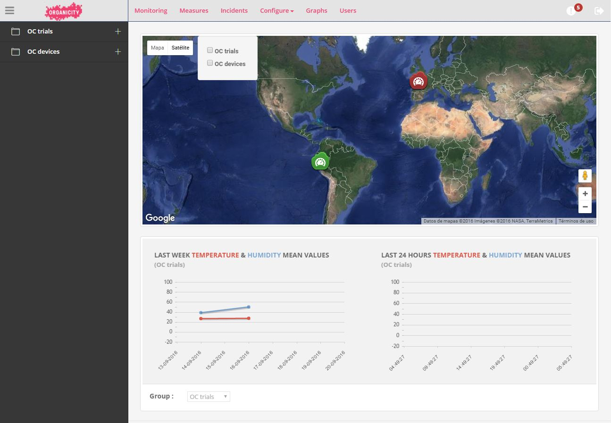

TSmarT
These are the TSmarT devices. A tool for retrieving environment data and establish alarms in your experiments within the OrganiCity EaaS platform.
This tool is based on the widespread TSmarT platform and its goal is to take advantage of sensor integration capabilities to provide not only a source of data but also a point to be handled remotely.
TSmarT devices are integrated with OrganiCity platform and therefore able to share data retrieved by their sensors with experimenters and users, who can check those values through the OrganiCity Observatory. On a first stage, up to 15 TSmarT devices will be available for experimenters through OrganiCity platform. They will be initially located in different spots in Spain, with the majority of them sending data from Santander, but also from Madrid and Barcelona.
OrganiCity TSmart devices act as a source of data, providing information related to environmental conditions thanks to the sensors integrated in them. Experimenters will be able to check periodically temperature, humidity and illuminance values wherever the devices are located, as well as establish simple alarms that could help them when creating their applications.
Technical capabilities
TSmarT is a modular wireless communications platform designed to facilitate the development and implementation of M2M, monitoring and remote control applications in different markets. The TSmarT family encompasses two programmable devices (TSmoTe & TSgaTe) and expansion modules for the different wireless technologies supported (ZigBee, Wi-Fi, GPRS, NFC/RFID, GPS).
These products address OEMs, engineering companies and system integrators seeking for a simple way to integrate wireless technologies into their products.
Among its main technical features the following should be highlighted:
- Standard ANSI C programing
- Multiple communication interfaces: ZigBee, Wi-Fi, Sigfox GPRS, RFID/NFC, GPS
- Real-time multi-tasking operating system
- Open source tools
- Powerful low-energy 32 bits microcontroller
- Sensor interfaces: UART, I2C, SPI, analog and digital I/Os, RS485
TSmarT devices support SIGFOX network, being this the technology employed to communicate them with OrganiCity platform. SIGFOX counts on wireless networks to connect low-energy objects, such as TSmarT devices, therefore offering global connectivity global cellular connectivity for the Internet of Things.
TSmarT Configuration website
A specific webpage devoted to let experimenters manage and configure TSmarT devices is offered within OrganiCity framework. Upon accessing its "experimenter area" on the OrganiCity Experimenter Portal, users who have required to perform some activities within their projects employing TSmarT devices will have the option to direct themselves to the TSmarT configuration webpage.
There, in the main screen they will find a list summarizing all the devices they can handle as well as their location over a map. By clicking on each device a new pop-up window will show up offering additional information, which can be expanded by clicking the ‘STATUS’ button or selecting the desired device from the left side menu. In addition, a couple of graphs below show the last measurements registered by that device sensors.

User has the chance to explore with more detail what is exactly happenning in each device. The screen will show all the information concerning each individual device:
- Name
- Group
- ID
- Date and Time of the last measurement
- Latitude and longitude
- Sensors values and alarms
When clicking on "CONFIGURE ALARMS" a new pop-up window will appear on screen, letting experimenters modify the alarm values and establish the thresholds they prefer. Given the design characteristics and looking for guaranteeing a long device battery life, there are certain constraints related to the configuration of those alarms into the actual devices, being the changes introduced by experimenters applied twice a day.

All in all, this configuration webpage is an easy to handle tool which can complement your OrganiCity experience.